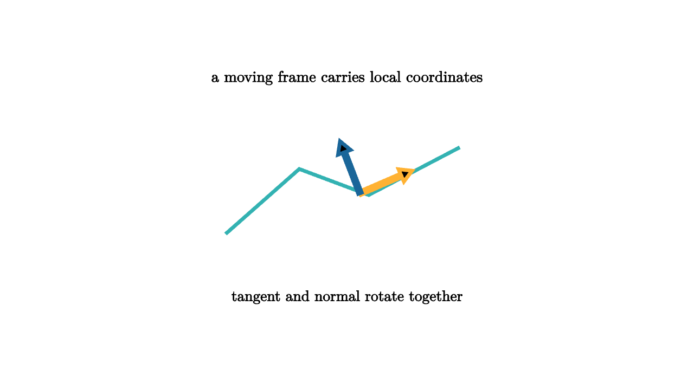

Rotations, Frames, and Curved Coordinates
A frame is a moving coordinate system attached to a point. On a curve, a frame can carry tangent and normal directions. On a surface, a frame records two tangent axes and one normal. As the point moves, the frame rotates. Lie groups organize those rotations.
In the plane, a frame angle lives in SO(2). In space, an orthonormal frame lives in SO(3). The derivative of a moving frame is not just another arbitrary matrix. It is controlled by the Lie algebra of skew-symmetric matrices, which encodes angular velocity. This turns changes of orientation into algebraic data.

source
mesh scene = [
center{1.35u} Text("a moving frame carries local coordinates", 0.64),
stroke{TEAL, 4} Polyline([[-1.4, -0.45, 0], [-0.55, 0.3, 0], [0.25, 0.0, 0], [1.3, 0.55, 0]]),
stroke{ORANGE, 4} Arrow([0.15, 0.02, 0], [0.75, 0.28, 0]),
stroke{BLUE, 4} Arrow([0.15, 0.02, 0], [-0.08, 0.62, 0]),
center{1.18d} Text("tangent and normal rotate together", 0.62)
]Curvature measures how frames fail to return unchanged after transport. Move a vector around a small loop on a curved surface and compare it with the starting vector. On a flat plane, it returns the same. On a sphere, it rotates by an amount related to enclosed area. That rotation is holonomy, and Lie groups provide its natural home.
source
let Frame = |turn| {
let p = [0.75 * cos(TAU * turn), 0.35 * sin(TAU * turn), 0]
let v = [0.38 * cos(TAU * turn + 0.8), 0.38 * sin(TAU * turn + 0.8), 0]
return [
stroke{LIGHT_GRAY, 2} Circle(0.78),
center{p} fill{WHITE} stroke{TEAL, 2} Circle(0.08),
stroke{ORANGE, 4} Arrow(p, p + v)
]
}
"Transport"
mesh title = center{1.35u} Text("curvature rotates transported frames", 0.62)
mesh loop = Frame(0.15)
mesh caption = center{1.2d} Text("a loop can return with a turned frame", 0.62)
play Fade(0.7)
play Write(0.7)
"Holonomy"
loop = Frame(1)
play Lerp(1.4)This is the beginning of connections. A connection tells how to compare nearby fibers, such as tangent spaces or internal state spaces. Curvature measures the noncommutativity of small moves in different directions. In gauge theory, the fibers may carry internal symmetries rather than spatial frames. The mathematics is the same pattern: local Lie algebra data controls global group-valued transport.
Modern geometry processing uses similar ideas. Surface parameterization, vector-field design, mesh smoothing, and texture transport all need a careful way to compare directions at different points. Computer graphics uses frames for shading, animation, and camera motion. Robotics uses frames constantly, because every sensor and joint has its own coordinate system.
The algebra matters because frame changes compose. If a camera frame is related to a robot base frame, and the base frame is related to a world frame, the total transform is a product in a Lie group. Small calibration updates belong in the Lie algebra. Optimization alternates between local linear corrections and global group composition.
Curved coordinates can make this feel mysterious. Lie groups reduce the mystery by separating two tasks. Locally, use the Lie algebra to describe small changes. Globally, use the group to compose finite transformations. Curvature then becomes the measurable failure of local comparisons to patch together without rotation.
The lesson is that a frame is not just a drawing aid. It is a group-valued state attached to geometry. When frames move, the language of Lie groups keeps the rotations, velocities, and accumulated curvature in one coherent system.